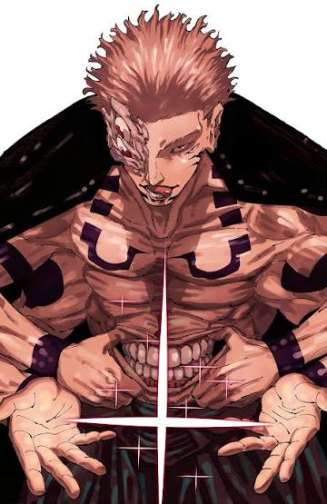

Introduction

Ryomen Sukuna is widely recognized as the King of Curses in Jujutsu Kaisen. His legacy stretches from ancient times in the Heian Era to modern-day conflicts, making him one of the most powerful and feared beings in the series. Sukuna’s cursed energy is unmatched, his intelligence unparalleled, and his sadistic tendencies make him a uniquely formidable antagonist.
This article will analyze every aspect of Sukuna — from his mythological origins and abilities to his psychological profile, major battles, and influence on the jujutsu world.
Origins & Mythology
The concept of Ryomen Sukuna originates in Japanese folklore, specifically ancient texts like the Nihon Shoki. In these records, Sukuna is depicted as a dual-faced, multi-limbed being with immense strength. Some legends portray him as a destructive entity, while others describe him as a being with divine or spiritual significance. These dual interpretations of power and terror serve as the foundation for the fictional character in Jujutsu Kaisen.
In the series, Sukuna lived during the Heian Era, a period characterized by refined art, noble courts, and the development of esoteric spiritual practices. The manga reimagines him as a human sorcerer who, upon death, became a cursed spirit. His soul was split into 20 indestructible fingers, each carrying fragments of his formidable cursed energy, which later became cursed objects pursued by sorcerers for their immense power.
The mythological inspiration gives Sukuna a timeless quality. His dual-faced symbolism in folklore translates into the series as a reflection of his cunning and destructive nature — a being that embodies both the ancient curse and modern threat.
Powers & Abilities
Sukuna’s abilities place him at the pinnacle of jujutsu power. Even with only a fraction of his full strength restored, he can dominate nearly all characters in the series. His capabilities combine cursed energy mastery, physical prowess, regeneration, and tactical intelligence.
Cursed Energy Deep Dive
Sukuna’s cursed energy is dense, potent, and highly versatile. It enables him to perform destructive attacks, heal rapidly, and enhance his physical strikes. His control over cursed energy is so refined that even small fragments of his fingers can be lethal in combat.
Physical Attributes
Beyond supernatural power, Sukuna’s speed, reflexes, strength, and durability surpass almost all human and cursed adversaries. He can demolish structures, react to high-speed attacks, and endure injuries that would incapacitate others.
Techniques
- Dismantle: Precise slashing capable of cutting through most defenses.
- Cleave: Adaptive slashing technique adjusting to target strength and cursed energy.
- Fire-Based Techniques: Highly destructive attacks surpassing common elemental curses.
- Reverse Cursed Technique: Rapid regeneration, making him extremely difficult to defeat.
Tactical & Strategic Mastery
Sukuna demonstrates strategic intelligence unmatched in the series. He observes opponents’ movements, anticipates attacks, and manipulates battlefield conditions. Even partially restored, his combination of raw power and tactical foresight makes him nearly unstoppable.
Malevolent Shrine: Domain Expansion
Sukuna’s Domain Expansion, Malevolent Shrine, defies conventional domain mechanics. It creates a vast attack radius without enclosing barriers, guaranteeing precise and unavoidable strikes against all within range. This domain allows him to dominate battlefields with surgical efficiency, turning space itself into a weapon.
The Malevolent Shrine exemplifies Sukuna’s balance between destructive force and strategic execution, making him a uniquely lethal presence.
Personality, Philosophy & Strategy
Sukuna’s worldview prioritizes power above all else. His sadistic, pragmatic intelligence drives him to manipulate and dominate others. He shows selective respect to those demonstrating strength and skill, which adds complexity to his otherwise ruthless persona. Every action is calculated to maximize advantage, making him both predictable in strategy and terrifying in execution.
This psychological layer directly impacts his combat style. By provoking opponents, observing reactions, and exploiting weaknesses, Sukuna often secures victory without relying solely on brute force.
Battles & Timeline
Yuji Itadori First Host
Yuji becomes Sukuna’s vessel after consuming his first finger. Even within a human host, Sukuna demonstrates fragmentary control over cursed energy, easily overpowering special-grade curses.
Shibuya Incident
During this arc, Sukuna temporarily gains full control of Yuji’s body, unleashing mass destruction. His tactical approach, spatial awareness, and cursed energy management demonstrate supreme mastery of combat.
Possession of Megumi Fushiguro
By temporarily taking over Megumi, Sukuna leverages the Ten Shadows technique to enhance combat efficiency, showcasing adaptability and strategic genius.
Other Major Engagements
Sukuna consistently defeats special-grade curses with precision, illustrating not only raw power but also methodical planning and battlefield control.
Comparative Analysis: Sukuna vs Other Characters
- Gojo Satoru: Both wield immense cursed energy; Sukuna relies on aggressive tactics, adaptability, and precise strikes, countering Gojo’s Infinity defense.
- Mahito: Mahito’s soul manipulation is largely ineffective against Sukuna’s regeneration and experience.
- Other Special-Grade Sorcerers: Sukuna can confront multiple high-level opponents simultaneously, adapting to their techniques effectively.
Legacy & Influence
Sukuna’s existence drives conflicts in the series, influencing alliances, battles, and character development. His mythological roots provide narrative depth, while his cursed fingers are central plot devices. His presence bridges ancient folklore with modern storytelling, cementing him as a symbol of ultimate cursed power.
Conclusion
Ryomen Sukuna remains an iconic character in Jujutsu Kaisen. His combination of overwhelming cursed energy, strategic genius, psychological complexity, and historical inspiration ensures that he dominates the narrative. Understanding his lore, abilities, and battles provides insight into why Sukuna continues to captivate fans and why he is considered the pinnacle of cursed power.